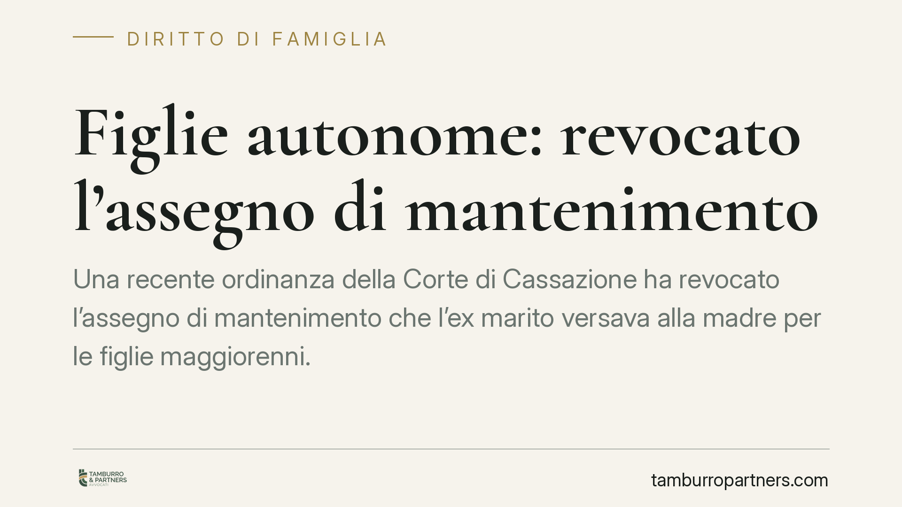

Figlie autonome: revocato l'assegno di mantenimento
Una recente ordinanza della Corte di Cassazione ha revocato l'assegno di mantenimento che l'ex marito versava alla madre per le figlie maggiorenni. Motivo: le figlie avevano raggiunto l'indipendenza economica, non risiedevano più stabilmente presso la casa materna e mancava la prova delle spese sostenute. La decisione ribadisce principi consolidati sull'onere probatorio e sulla natura non automatica del mantenimento.

Il caso
Dopo la separazione, l'ex marito continuava a versare alla ex moglie un assegno mensile di circa cinquemila euro destinato al mantenimento delle figlie maggiorenni. Con il tempo, tuttavia, la situazione di fatto era mutata: le figlie avevano trovato un'occupazione stabile e non vivevano più in modo continuativo presso l'abitazione materna.
L'uomo ha quindi chiesto la modifica delle condizioni economiche. Dopo il vaglio del Tribunale di Napoli e della Corte d'Appello di Napoli, la questione è approdata in Cassazione, che ha confermato la revoca dell'assegno. Due gli elementi decisivi: il raggiungimento dell'autonomia economica da parte delle figlie e la mancata dimostrazione, da parte della madre, delle spese effettivamente sostenute per loro.
Inquadramento normativo
Il riferimento è l'articolo 337-septies del Codice civile, che disciplina il mantenimento dei figli maggiorenni non economicamente autosufficienti. La norma stabilisce un principio chiaro: il dovere di mantenimento non cessa automaticamente al compimento dei diciotto anni, ma prosegue finché il figlio non raggiunge l'indipendenza economica o non la raggiunge per propria colpa (ad esempio rifiutando senza ragione le occasioni di lavoro).
Da qui discende il profilo dell'onere della prova. Secondo l'orientamento consolidato della giurisprudenza di legittimità — richiamato anche dalle Sezioni Unite — spetta a chi invoca il mantenimento (il figlio maggiorenne o il genitore che lo richiede) dimostrare la persistente mancanza di autonomia economica e il concreto impegno nella ricerca di un'occupazione. Non è l'obbligato a dover provare l'autosufficienza del figlio: è chi chiede il sostegno a dover giustificarne le ragioni.
Nel caso in esame, la mancata prova delle spese ha inciso in modo determinante. L'assegno versato al genitore convivente presuppone infatti che quel genitore sostenga i costi ordinari del figlio all'interno di un nucleo domestico condiviso. Venuta meno la convivenza stabile, viene meno anche il presupposto pratico del versamento diretto alla madre.
Due profili da tenere distinti
La decisione va letta su un doppio piano, per evitare fraintendimenti.
Il primo profilo è quello dell'autonomia economica: se il figlio guadagna in modo stabile e sufficiente, il diritto al mantenimento si estingue. È una valutazione sostanziale, che guarda alla capacità reddituale effettiva.
Il secondo profilo è quello della convivenza. Il versamento dell'assegno al genitore ha senso quando il figlio vive con lui e quel genitore anticipa le spese. Se il figlio non risiede più stabilmente presso quel tetto, e a maggior ragione se è autonomo, cade la giustificazione del pagamento indiretto tramite il genitore.
I due profili possono operare insieme, come nel caso di specie, o separatamente. Un figlio ancora non autonomo ma che non convive più con un genitore, ad esempio, potrebbe avere diritto a ricevere direttamente il contributo, secondo quanto previsto dallo stesso articolo 337-septies.
Implicazioni pratiche
Per il genitore obbligato, la pronuncia conferma che è possibile ottenere la revoca o la riduzione dell'assegno quando le condizioni di fatto cambiano. Attenzione però: la revoca non opera in automatico. Non basta smettere di pagare perché il figlio ha compiuto diciotto anni o ha trovato lavoro.
Occorre una domanda giudiziale di modifica delle condizioni. Fino alla decisione del giudice, l'obbligo resta in vigore e la sospensione unilaterale dei versamenti espone a conseguenze, comprese quelle esecutive.
Per il genitore che riceve l'assegno, il messaggio è altrettanto netto: la documentazione delle spese non è un formalismo. In un eventuale giudizio, l'assenza di prove concrete sui costi sostenuti indebolisce la posizione.
Cosa fare in concreto
- Non interrompere i pagamenti di propria iniziativa: presenta prima una domanda di modifica delle condizioni al giudice competente.
- Raccogli le prove del mutamento: contratti di lavoro delle figlie, buste paga, residenze effettive, movimenti che dimostrino l'autonomia o la cessazione della convivenza.
- Se ricevi l'assegno, conserva la documentazione delle spese: canoni, utenze, iscrizioni, contributi effettivamente versati per i figli.
- Valuta la posizione del figlio maggiorenne: se non è convivente ma non è autonomo, può chiedere il versamento diretto a proprio favore.
- Consigliamo di consultare un legale prima di agire: la valutazione dell'autonomia economica è caso per caso e incide sull'esito.
Contributo informativo a cura di Tamburro & Partners Avvocati - Avv. Giuseppe Tamburro. Non costituisce parere legale.
Ogni famiglia ha il suo equilibrio.
Separazione, divorzio, affidamento, assegno: se vuoi un confronto riservato su una specifica situazione, scrivi allo studio. Ti rispondiamo entro un giorno lavorativo.